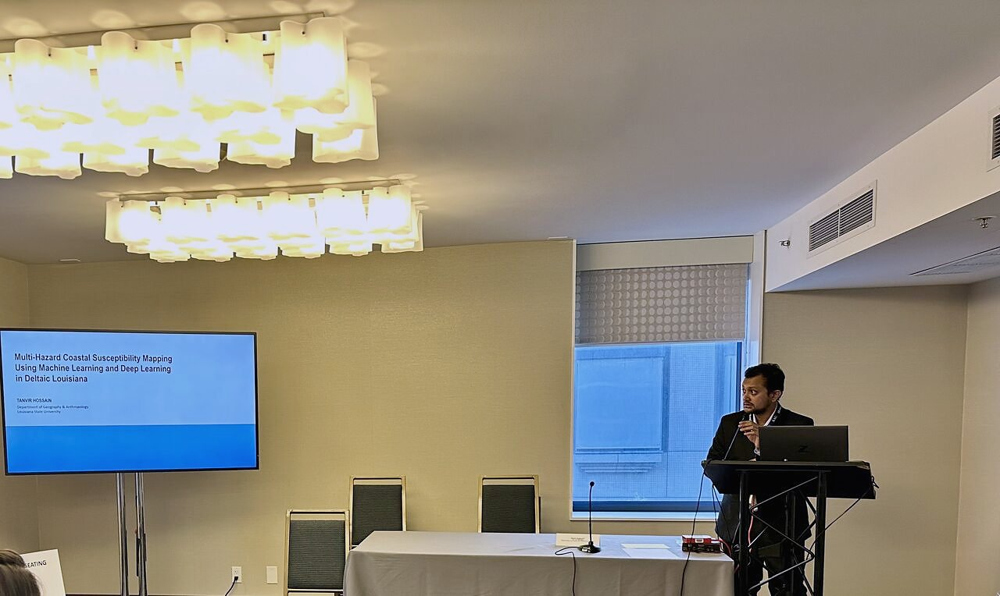

Research project · Published 2026
Where coastal hazards overlap in deltaic Louisiana
Flooding, land subsidence, storm surge and salinity intrusion rarely arrive alone. This project maps all four together for Terrebonne Parish with machine learning and deep learning, then asks a harder question: how far can those models really be trusted outside the places they were trained?
The problem
Compound hazards, mapped one at a time
Deltaic communities face several hazards at once, and the risks are accelerating. Most susceptibility studies model a single hazard, which makes it hard to see where threats stack up on the same ground. This study builds one unified framework for all four.
Flooding
Best holdout F1-macro of 0.923, the strongest of the four.
Land subsidence
The sinking delta surface that magnifies every other hazard.
Storm surge
Hurricane-driven water pushed inland across the marsh.
Salinity intrusion
Labels from 21 kriged monitoring stations (R² = 0.82).
Study area
Terrebonne Parish, Louisiana
A low-lying parish in the Mississippi River delta, bordered by the Gulf, where marsh loss, subsidence and storm exposure meet working communities such as Houma, Montegut and Pointe-aux-Chênes.
Approach
How it was built
- One predictor stack for every hazardAll four hazards are modeled from a common 30 m stack. Predictors tied to a hazard's own labels are excluded for that hazard, to avoid leakage.
- Salinity labels from field monitoringSalinity surfaces were kriged from 21 monitoring stations (RMSE = 3.40 PSU, R² = 0.82).
- Eight algorithms against an ensembleEight machine-learning and deep-learning algorithms were benchmarked per hazard and compared against an ensemble meta-learner (stacking).
- Three ways to test transferModels were validated by blocked holdout, interleaved block cross-validation, and a strict contiguous-zone design with a 5 km buffer.
- One composite indexThe four hazard maps are combined into a Multi-Hazard Susceptibility Index (MHSI) to show where risk concentrates.
The key insight
Validation design changes the story
Spatial data are autocorrelated, so nearby test points can make a model look better than it is. The three designs below put increasing distance between training and testing data.
Blocked holdout
Best F1-macro ranged from 0.644 (salinity) to 0.923 (flood).
Interleaved block CV
Statistically indistinguishable from holdout.
Contiguous zones + 5 km buffer
The only design that exposed real transfer limits: F1-macro fell by 12 to 54 percentage points, depending on the hazard.
Findings
What we learned
Drop in F1-macro under the strictest spatial test. Standard validation can overstate how well hazard models transfer to new areas.
Ensemble stacking did not beat a single model chosen by cross-validation, despite roughly five times the training cost.
Parish-wide mean Multi-Hazard Susceptibility Index (0.674 on land only).
Southern coastal Terrebonne stands out as the priority zone for risk reduction, and that holds when any single hazard is reweighted.
To our knowledge, this is the first framework to map these four hazards jointly while measuring how validation design governs apparent model transferability.
Cite and share
The paper
Presented at
- AAG Annual Meeting 2026, San Francisco
- AGU Annual Meeting, December 2026 (accepted): How Spatial Validation Design Governs Apparent Model Transferability
